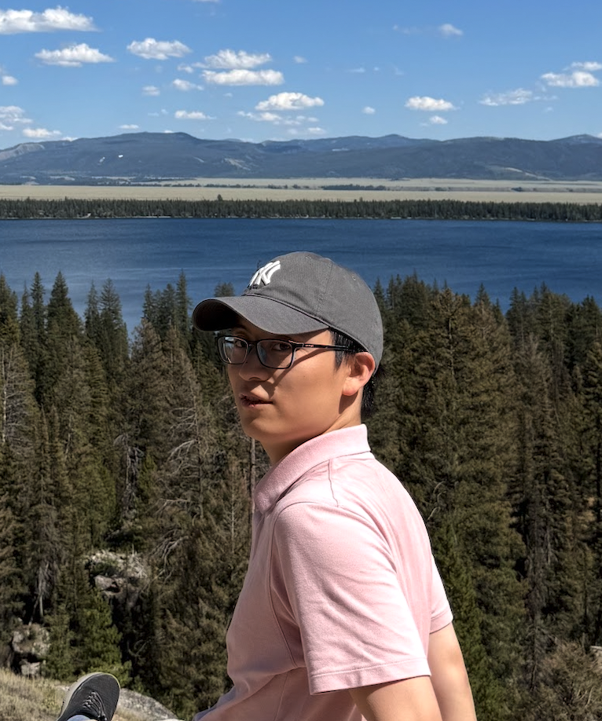

Spectrum and Eigenmodes
how openness reshapes the spectrum and modes of physical systems and how robust are these states against external perturbations;
My name is Chang Shu. I am a Ph. D. candidate in condensed matter theory working with Prof. Kai Sun at the University of Michigan. My current research is centered on open quantum systems and many-body dynamics: how dissipation, measurement, interactions, and quantum jumps reshape symmetry breaking, dynamical phase transitions, and transport. I also have expertise in non-Hermitian physics and nonreciprocal phenomena in driven dissipative systems.

Today’s state-of-the-art quantum experiments and technologies inevitably operate as open systems, constantly exchanging information and energy with their environment. Traditionally, the guiding principle has been to minimize the “openness” and isolate the system as much as possible, because environmental coupling is expected to wash out quantum coherence and erase long-lived memory. However, my current research is devoted to turning openness from a limitation into an advantage: to understand how system-environment coupling can be harnessed and engineered to generate novel dynamical phenomena and phases of matter instrumental to future applications.
how openness reshapes the spectrum and modes of physical systems and how robust are these states against external perturbations;
Interacting quantum dynamics, dynamical quantum phase transitions, many-body backflow, and finite-size scaling in driven or dissipative settings.
Non-Bloch band theory, spectral moments, skin effects, point-gap topology, and robust diagnostics for non-Hermitian descriptions.
Open-system and many-body dynamics are listed first.
A lightweight place for informal derivations, reading notes, and Mathematica notebooks. The placeholders below are written around the current open-system / dynamics direction.
Department of Physics, University of Michigan
Randall Laboratory, Ann Arbor, MI